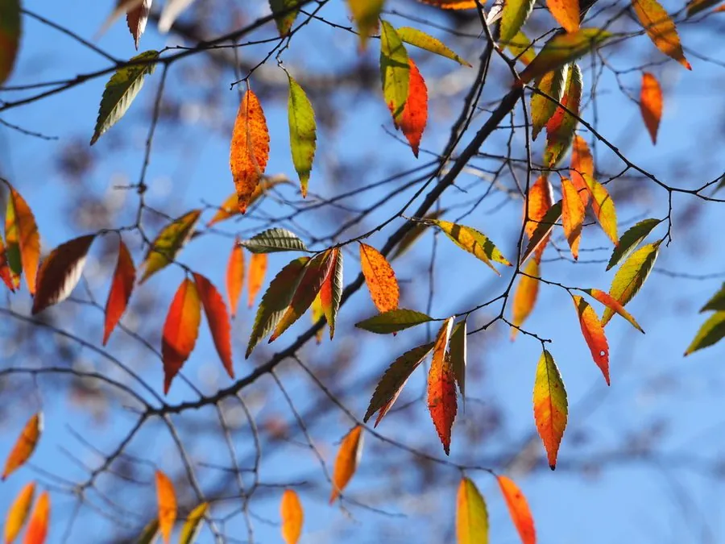

乔木 · 植物界
榉树 Zelkova serrata

中国南方与东亚常见的落叶乔木，树形端正、秋叶橙红，木材坚硬耐腐，因野生资源稀少被列为国家二级保护植物。
- 分类
- 门被子植物门纲木兰纲目蔷薇目科榆科属榉属
- 栖息环境
- 海拔 1500 米以下的山坡、沟谷与村旁，喜光喜温暖湿润
- 地理分布
- 中国长江流域以南及华北、西南山地，朝鲜半岛、日本也有分布
- 保护级别
- 暂无评估；中国国家二级保护野生植物
物种志
榉树为落叶乔木，高可达 30 m，树皮灰白色、呈鳞片状剥落；叶片卵形至椭圆状披针形，边缘具整齐的锐锯齿，先端渐尖，叶基偏斜。花期 4 月，花单性同株，雄花簇生于新枝下部，雌花单生或簇生；果实为坚果，斜卵形，直径约 4 mm，成熟时黄褐色，无翅。
榉树分布于中国长江流域以南及华北、西南山地，也见于朝鲜半岛与日本，喜光、喜温暖湿润，适宜深厚肥沃、排水良好的酸性土壤。木材坚硬致密、耐腐耐水，是建筑、家具、造船与器械的优良用材，中国传统家具中的“血榉”即榉木；树皮纤维可制绳、造纸；树形端正、秋叶橙红，是优良的庭园与行道树种。由于长期采伐，野生榉树资源减少，被列为国家二级保护野生植物。
形态与习性
- 株高可达 30 m，树皮鳞片状剥落
- 花期4 月，花单性同株
- 果期10 月，坚果斜卵形
- 光照喜光，不耐长期荫蔽
- 水分喜湿润，怕积水
- 土壤深厚肥沃的酸性壤土
- 主要用途建筑与家具用材、庭园观赏、树皮纤维造纸
趣味知识
- 榉树秋叶转为橙红或黄色，树形端正，是南方重要的秋色叶与庭园树种。
- 榉木坚硬耐腐，中国传统家具中的“血榉”就是榉树木材。
- 榉树野生资源稀少，已被列为国家二级保护野生植物，采伐受到限制。
- 榉树树皮呈鳞片状剥落，老树树干斑驳，是辨认它的特征之一。